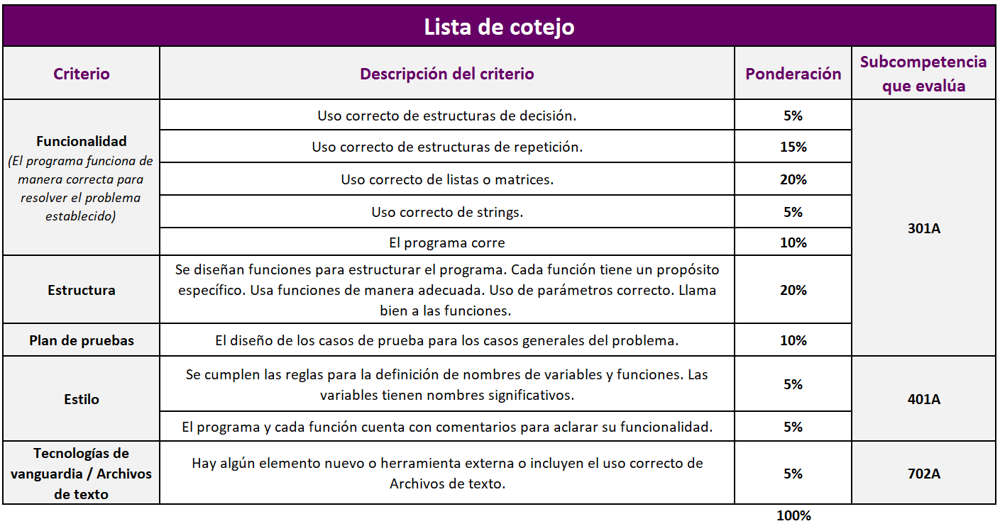

TC 1028. Pensamiento Computacional para Ingeniería
. |
Buscando problemas para mi proyecto
integrador
 Modalidad
Modalidad
Individual.
 Objetivo
Objetivo
Analizar problemas que se puedan resolver mediante
programación.
 Instrucciones
Instrucciones
En esta actividad deberás buscar un problema que usarás
como base para trabajar en tu proyecto integrador. Selecciona dos problemas de tu interés personal. Uno de
estos problemas será la base para desarrollar tu
proyecto integrador.
- Algunos ejemplos muy genéricos de problemas son:
- Realizar juegos: gato, memoria, maratón, ahorcado, etc.
- Convertir unidades numéricas de forma compleja como por ejemplo
números arábigos a romanos y viceversa.
- Predecir la resistencia de ciertos materiales o estructuras dadas
ciertas condiciones.
- Hacer simulaciones pequeñas sobre algún proceso
estocástico como la evolución o reacciones químicas.
- Realizar un programa para el aprendizaje o
comprensión de un proceso.
- Si no se te ocurre ningún tema para tu proyecto, puedes basarte en la problemática del curso
"problemas de PISA" y proponer alguna aplicación que puedas diseñar o
desarrollar para:
- Ayudar a nuestros niños y jóvenes a aprender conceptos matemáticos.
- Fortalecer habilidades cognitivas.
- Gamificar el aprendizaje de conceptos de matemáticas y de ciencias.
- En cada entrega de avance del proyecto, integra los
nuevos conceptos aprendidos en clase.
- En estos programas se checa a detalle que cumplas
con las reglas de estilo, estructura, funcionalidad y pruebas.
- Los casos de prueba deben de estar documentados
correctamente en los comentarios.
- Para poder demostrar tus competencias se espera al menos un programa con la misma complejidad de los laboratorios
y tareas de cada tema.
- Incluye comentarios que expliquen el funcionamiento
general
de tu proyecto.
- Incluye comentarios que expliquen qué es lo que hace cada
función, con el fin de aclarar su funcionalidad.
- Es posible que no todos los temas quepan en tu
proyecto, pero se espera que al menos incluyas el 80% de los temas vistos en el
curso.
Rúbrica de evaluación de competencias

 Recursos
Recursos
Ejemplos de
entregables de "Buscando un problema para mi proyecto integrador"
 Especificaciones de entrega
Especificaciones de entrega
- Entregar la propuesta de tu proyecto integrador
en el Formato "PropuestaProyecto.docx".
- No se aceptarán propuestas de proyecto integrador por
correo electrónico, ni después de la fecha y horario límite.
Formato de entrega:
pdf
Nombre del
entregable:
PropuestaProyecto_matricula.pdf
Medio de entrega: Se entrega en Canvas
en la sección de Módulos > Proyecto: Buscando problemas para mi
proyecto
Instrucciones para enviar tus archivos por Canvas:
-
Haz clic en el botón de
Tareas.
-
Haz clic en la actividad de
EntregaPropuesta.
-
Haz clic en el botón de
Entregar tarea.
-
En el fólder de
Carga del archivo, haz clic en el botón de
Examinar y localiza el archivo
PropuestaProyecto_matrícula.pdf.
-
Cuando hayas terminado de subir tu archivo, haz clic en el botón de
Entregar tarea y listo!!
.
© Departamento de Computación
. |